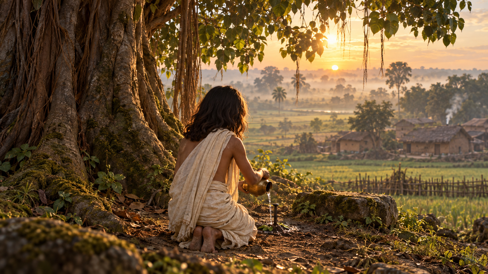

I · The restless seeker
01 The first prayer
Upload 01-child-prayer.png
Read the exact video prompt
Download prompt textContinuity / edit: Finish on folded hands. An editorial leaf-to-paper dissolve introduces 02; do not ask Gemini to invent the examination hall inside this clip.
The supplied plate starts during the offering, with the nail already planted. For the exact earlier nail-planting action, add an optional detail pickup later rather than crowding this short shot.
Save as GV_01_child_prayer_v01.mp4